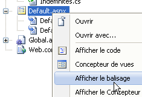
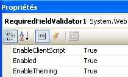
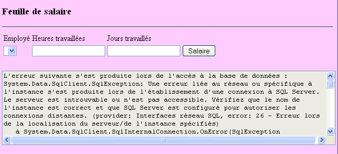

4. تطبيق [SimuPaie] – الإصدار 1 من – ASP.NET
4.1. مقدمة
نريد كتابة تطبيق .NET يسمح للمستخدم بمحاكاة حسابات الرواتب لمقدمي خدمات رعاية الأطفال في جمعية "Maison de la petite enfance" في إحدى البلديات.
سيبدو نموذج حساب الرواتب ASP.NET كما يلي:

سيكون لتطبيق ASP.NET البنية التالية:
 |
- عند إرسال الطلب الأول إلى التطبيق، يتم إنشاء مثيل لكائن من النوع [Global] مشتق من النوع [System.Web.HttpApplication]. سيقوم هذا الكائن بمعالجة ملف التكوين [web.config] الخاص بتطبيق الويب وتخزين بعض البيانات مؤقتًا من قاعدة البيانات (العملية 0 أعلاه).
- عندما يتم إرسال الطلب الأول (العملية 1) إلى صفحة [Default.aspx]، وهي الصفحة الوحيدة للتطبيق، يتم معالجة الحدث [Load]. وهنا يتم ملء مربع القائمة المنسدلة الخاص بالموظفين. يتم استرداد البيانات المطلوبة لمربع القائمة المنسدلة من الكائن [Global]، الذي قام بتخزينها مؤقتًا. هذه هي العملية 2 أعلاه. ترسل العملية 4 الصفحة التي تم تهيئتها إلى المستخدم.
- عندما يتم إرسال طلب حساب الراتب (العملية 1) إلى صفحة [Default.aspx]، تتم معالجة الحدث [Load] مرة أخرى. لا يتم تنفيذ أي شيء لأن هذا طلب POST، وقد تمت كتابة معالج [Pam_Load] بحيث لا يقوم بأي شيء في هذه الحالة (باستخدام القيمة المنطقية IsPostBack). بمجرد معالجة الحدث [Load]، تتم معالجة الحدث [Click] على الزر [Salary] بعد ذلك. يتطلب هذا الحدث بيانات لم يتم تخزينها مؤقتًا في [Global]. لذلك، يسترد معالج الأحداث هذه البيانات من قاعدة البيانات. هذه هي العملية 3 أعلاه. ثم يتم حساب الراتب، وترسل العملية 4 النتائج إلى المستخدم.
4.2. Visual Web Developer 2008
 |
- في [1]، قم بإنشاء مشروع جديد
- في [2]، من النوع [Web / ASP.NET Web Application]
- في [3]، قم بتسمية المشروع
- في [4]، حدد اسمه وفي [5] موقعه. سيتم إنشاء مجلد [c:\temp\pam-aspnet\pam-v1-adonet] للمشروع.
 |
- في [5]، مشروع Visual Web Developer
- في [6]، خصائص المشروع (انقر بزر الماوس الأيمن على المشروع / خصائص / التطبيق).
- في [7]، اسم التجميع الذي سيتم إنشاؤه عند بناء المشروع
- في [8]، مساحة الاسم الافتراضية التي نريد استخدامها لفئات المشروع. تم إنشاء فئة [_Default] المحددة في ملفات [Default.aspx.cs] و [Default.aspx.designer.cs] في مساحة الاسم [pam_v1_adonet]، المشتقة من اسم المشروع. يمكنك تغيير مساحة الاسم هذه مباشرةً في كود هذين الملفين:
[Default.aspx.cs]
using System;
....
namespace pam_v1
{
public partial class _Default : System.Web.UI.Page
{
[Default.aspx.designer.cs]
//------------------------------------------------------------------------------
// <auto-generated>
// This code was generated by a tool.
// Runtime version :2.0.50727.3603
//
// Changes made to this file may result in incorrect behavior and will be lost if
// the code is regenerated.
// </auto-generated>
//------------------------------------------------------------------------------
namespace pam_v1 {
public partial class _Default {
.........
يجب أيضًا تعديل ترميز ملف [Default.aspx]:
 |
<%@ Page Language="C#" AutoEventWireup="true" CodeBehind="Default.aspx.cs" Inherits="pam_v1._Default" %>
...
تشير السمة Inherits أعلاه إلى الفئة المحددة في ملفات [Default.aspx.cs] و [Default.aspx.designer.cs]. ويُستخدم هناك مساحة الاسم pam_v1.
4.2.1. نموذج [ Default.aspx]
المظهر المرئي للنموذج [ Default.aspx] هو كما يلي:
 |
المكونات هي كما يلي:
رقم | النوع | الاسم | الدور |
قائمة منسدلة | EmployeeComboBox | يحتوي على قائمة بأسماء الموظفين | |
مربع النص | مربع النص Hours | عدد ساعات العمل – العدد الفعلي | |
مربع نص | مربع النص | عدد أيام العمل – عدد صحيح | |
زر | ButtonSalary | حساب الراتب | |
مربع النص | مربع نص الخطأ | رسالة معلومات للمستخدم ReadOnly=true، TextMode=MultiLine | |
التسمية | اسم التسمية | اسم الموظف المحدد في (1) | |
التسمية | الاسم الأول | الاسم الأول للموظف المحدد في (1) | |
التسمية | LabelAddress | العنوان | |
الملصق | المدينة | المدينة | |
الملصق | الرمز البريدي | الرمز البريدي | |
الملصق | فهرس التسميات | فهرس | |
التسمية | تسمية CSGRDS | معدل مساهمة CSGRDS | |
التسمية | تسمية CSGD | معدل مساهمة CSGD | |
التصنيف | تسمية التقاعد | معدل الاشتراك في صندوق التقاعد | |
التسمية | تسميةSS | معدل اشتراكات الضمان الاجتماعي | |
التسمية | LabelSH | الأجر الأساسي بالساعة للمؤشر المشار إليه في (11) | |
التسمية | التسمية EJ | بدل المعيشة اليومي للمؤشر المشار إليه في (11) | |
التسمية | LabelRJ | بدل الوجبات اليومي للمؤشر المشار إليه في (11) | |
التسمية | LabelVacation | معدل بدل الإجازة المدفوعة الذي يطبق على الراتب الأساسي | |
التسمية | LabelSB | مبلغ الراتب الأساسي | |
التسمية | التسميةCS | مبلغ اشتراكات الضمان الاجتماعي الواجب دفعها | |
التسمية | التسميةIE | مبلغ إعانة رعاية الطفل | |
التسمية | التسميةIR | مبلغ بدل الوجبات للطفل في الرعاية | |
التسمية | LabelSN | الراتب الصافي الذي سيُدفع للموظف |
يحتوي النموذج أيضًا على حاويتين [Panel]:
يحتوي على (5) مكونات TextBoxError | |
يحتوي على المكونات من (6) إلى (24) |
يمكن إظهار مكون [Panel] أو إخفاؤه برمجياً باستخدام خاصيته المنطقية [Panel].Visible.
4.2.2. التحقق من صحة المدخلات
لحساب الراتب، يقوم المستخدم بما يلي:
- يختار موظفًا في [1]
- يدخل عدد ساعات العمل في [2]. يمكن أن يكون هذا الرقم عشريًا، مثل 2.5 لـ 2 ساعة و 30 دقيقة.
- يدخل عدد أيام العمل في [3]. هذا الرقم هو عدد صحيح.
- يحسب الراتب باستخدام الزر [4]
 |
عندما يدخل المستخدم بيانات غير صحيحة في [2] و[3]، يتم التحقق من صحتها بمجرد أن ينتقل المستخدم بين حقول الإدخال. وبالتالي، تم التقاط لقطة الشاشة أدناه قبل أن ينقر المستخدم على زر [الراتب]:
 |
هناك شرطان ضروريان للسلوك الموصوف أعلاه:
- يجب أن تكون خاصية EnableClientScript لمكونات التحقق من الصحة مضبوطة على true:
 |
- يجب أن يكون المتصفح الذي يعرض الصفحة قادرًا على تنفيذ كود JavaScript المضمن في صفحة HTML.
إذا لم يتحقق متصفح العميل من صحة البيانات بنفسه، فلن يتم التحقق من صحة البيانات إلا عندما يقوم المتصفح بإرسال إدخالات النموذج إلى الخادم. وعندها، فإن الكود الموجود على الخادم الذي يعالج طلب المتصفح هو الذي سيتحقق من صحة البيانات. لاحظ أنه يجب إجراء هذا التحقق دائمًا، حتى إذا كانت الصفحة المعروضة في متصفح العميل تحتوي على كود JavaScript يقوم بنفس التحقق. وذلك لأن الخادم لا يمكنه التأكد من أن طلب POST الذي يتلقاه يأتي فعليًا من تلك الصفحة، وبالتالي أن البيانات قد تم التحقق من صحتها.
فيما يلي قائمة المدققين:
رقم | النوع | الاسم | الدور |
RequiredFieldValidator | RequiredFieldValidatorHours | يتحقق من أن الحقل [2] [TextBoxHeures] ليس فارغًا | |
RangeValidator | RangeValidatorHours | يتحقق من أن الحقل [2] [TextBoxHours] هو عدد حقيقي في النطاق [0, 200] | |
RequiredFieldValidator | RequiredFieldValidatorDays | يتحقق من أن الحقل [3] [TextBoxDays] ليس فارغًا | |
RangeValidator | RangeValidatorDays | يتحقق من أن الحقل [3] [TextBoxDays] هو عدد صحيح في النطاق [0,31] |
المهمة: قم بإنشاء صفحة [Default.aspx]. أولاً، ضع الحاويتين [PanelErrors] و [PanelSalary] بحيث يمكنك بعد ذلك وضع المكونات التي من المفترض أن تحتوي عليها.
4.2.3. كيانات التطبيق
 |
بمجرد قراءتها، سيتم تخزين الصفوف من جداول [contributions] و [employees] و [allowances] في كائنات من النوع [Contributions] و [Employee] و [Allowances] المحددة على النحو التالي:
namespace Pam.Entites
{
public class Cotisations
{
// automatic properties
public double CsgRds { get; set; }
public double Csgd { get; set; }
public double Secu { get; set; }
public double Retraite { get; set; }
// manufacturers
public Cotisations()
{
}
public Cotisations(double csgRds, double csgd, double secu, double retraite)
{
CsgRds = csgRds;
Csgd = csgd;
Secu = secu;
Retraite = retraite;
}
// ToString
public override string ToString()
{
return string.Format("[{0},{1},{2},{3}]", CsgRds, Csgd, Secu, Retraite);
}
}
}
namespace Pam.Entites
{
public class Employe
{
// automatic properties
public string SS { get; set; }
public string Nom { get; set; }
public string Prenom { get; set; }
public string Adresse { get; set; }
private string Ville { get; set; }
private string CodePostal { get; set; }
private int Indice { get; set; }
// manufacturers
public Employe()
{
}
public Employe(string ss, string nom, string prenom, string adresse, string codePostal, string ville, int indice)
{
SS = ss;
Nom = nom;
Prenom = prenom;
Adresse = adresse;
CodePostal = codePostal;
Ville = ville;
Indice = indice;
}
// ToString
public override string ToString()
{
return string.Format("[{0},{1},{2},{3},{4},{5},{6}]", SS, Nom, Prenom, Adresse, Ville, CodePostal, Indice);
}
}
}
namespace Pam.Entites
{
public class Indemnites
{
// automatic properties
public int Indice { get; set; }
public double BaseHeure { get; set; }
public double EntretienJour { get; set; }
public double RepasJour { get; set; }
public double IndemnitesCP { get; set; }
// manufacturers
public Indemnites()
{
}
public Indemnites(int indice, double baseHeure, double entretienJour, double repasJour, double indemnitesCP)
{
Indice = indice;
BaseHeure = baseHeure;
EntretienJour = entretienJour;
RepasJour = repasJour;
IndemnitesCP = indemnitesCP;
}
// identity
public override string ToString()
{
return string.Format("[{0}, {1}, {2}, {3}, {4}]", Indice, BaseHeure, EntretienJour, RepasJour, IndemnitesCP);
}
}
}
4.2.4. تكوين التطبيق
سيكون ملف [Web.config] الذي يقوم بتكوين التطبيق كما يلي:
<?xml version="1.0" encoding="utf-8"?>
<configuration>
<configSections>
...
</configSections>
<connectionStrings>
<add name="dbpamSqlServer2005" connectionString="Data Source=.\SQLEXPRESS;AttachDbFilename=C:\data\...\dbpam.mdf;User Id=sa;Password=msde;Connect Timeout=30;" providerName="System.Data.SqlClient"/>
</connectionStrings>
<appSettings>
<add key="selectEmploye" value="select NOM,PRENOM,ADRESSE,VILLE,CODEPOSTAL,INDICE from EMPLOYES where SS=@SS"/>
<add key="selectEmployes" value="select PRENOM, NOM, SS from EMPLOYES"/>
<add key="selectCotisations" value="select CSGRDS,CSGD,SECU,RETRAITE from COTISATIONS"/>
<add key="SelectIndemnites" value="select INDICE,BASEHEURE,ENTRETIENJOUR,REPASJOUR,INDEMNITESCP from INDEMNITES"/>
</appSettings>
<system.web>
<!--
Définissez compilation debug="true" pour insérer des symboles
de débogage dans la page compilée. Comme ceci
affecte les performances, définissez cette valeur à true uniquement
lors du développement.
-->
<compilation debug="false">
...
</configuration>
- السطر 9: يحدد سلسلة الاتصال بقاعدة بيانات SQL Server
- الأسطر 13-16: تحدد استعلامات SQL التي يستخدمها التطبيق لتجنب ترميزها بشكل ثابت في الكود.
- السطر 13: يتم تحديد معلمات استعلام SQL. وترمز معلمات الاستعلام الخاصة بـ SQL Server.
المهمة: أدخل هذه المعلمات في ملف [Web.config]. سيتم تعديل السطر 9 ليتناسب مع المسار الفعلي لقاعدة البيانات [dbpam.mdf].
4.2.5. تهيئة التطبيق
يتم تهيئة تطبيق ASP.NET بواسطة ملف [Global.asax.cs]. وهو منظم على النحو التالي:
 |
- في [1]، أضف عنصرًا جديدًا إلى المشروع
- في [2]، أضف فئة التطبيق العامة، والتي تسمى [Global.asax] بشكل افتراضي [3]
 |
- في [4]، ملف [Global.asax] والفئة المرتبطة به [Global.asax.cs]
- في [5]، اعرض ترميز [Global.asax]
<%@ Application Codebehind="Global.asax.cs" Inherits="pam_v1.Global" Language="C#" %>
يتم تعريف فئة [pam_v1.Global] في ملف [Global.asax.cs]. ولأغراضنا، سيتم تعريفها على النحو التالي:
using System;
using System.Collections.Generic;
using System.Configuration;
using System.Data.SqlClient;
using Pam.Entites;
namespace pam_v1
{
public class Global : System.Web.HttpApplication
{
// --- static application data ---
public static Employe[] Employes;
public static Cotisations Cotisations;
public static Dictionary<int, Indemnites> Indemnites = new Dictionary<int, Indemnites>();
public static string Msg = string.Empty;
public static bool Erreur = false;
public static string ConnectionString = null;
// application startup
public void Application_Start(object sender, EventArgs e)
{
...
try
{
// connection
ConnectionString = ...
using (SqlConnection connexion = new SqlConnection(ConnectionString))
{
connexion.Open();
// retrieve the list of employees and place it in the static array [Employees]
...
// contribution rates are retrieved from the static variable [Contributions]
...
// retrieve allowances from the static dictionary [Allowances]
...
// we succeeded
Msg = "Base chargée...";
}
}
catch (Exception ex)
{
// we note the error
Msg = string.Format("L'erreur suivante s'est produite lors de l'accès à la base de données : {0}", ex);
Erreur = true;
}
}
}
}
- السطر 20: يتم تنفيذ الأسلوب [Application_Start] عند بدء تشغيل تطبيق الويب. ويتم تنفيذه مرة واحدة فقط.
- الأسطر 12-17: الحقول العامة والثابتة للفئة. يتم مشاركة الحقل الثابت بين جميع مثيلات الفئة. وبالتالي، إذا تم إنشاء مثيلات متعددة لفئة [Global]، فإنها جميعًا تشترك في نفس الحقل الثابت [Employees]، الذي يمكن الوصول إليه عبر المرجع [Global.Employees]، أي [ClassName].StaticField. [Global] هو اسم فئة. وبالتالي فهو نوع بيانات. هذا الاسم تعسفي. تستمد الفئة دائمًا من [System.Web.HttpApplication].
لنعد إلى فئة [Global] الخاصة بنا. قد يتساءل المرء عما إذا كان من الضروري إعلان حقولها على أنها ثابتة. في الواقع، يبدو أنه في بعض الحالات، قد تكون هناك مثيلات متعددة لفئة [Global]، مما يبرر جعل الحقول التي يجب مشاركتها بين جميع هذه المثيلات ثابتة.
هناك طريقة أخرى لمشاركة بيانات نطاق "التطبيق" بين الصفحات المختلفة لتطبيق ويب. وبالتالي، يمكن تخزين مصفوفة Employees في الإجراء Application_Start على النحو التالي:
Application.Add("employes",Employes);
بشكل افتراضي، يمثل [Application] في أي تطبيق ASP.NET مرجعًا إلى مثيل للفئة المحددة في [Global.asax.cs]. Application عبارة عن حاوية قادرة على تخزين كائنات من أي نوع. يمكن بعد ذلك استرداد المصفوفة Employees في كود أي صفحة في تطبيق الويب على النحو التالي:
Employe[] employes=Application.Get["employes"] as Employe[];
نظرًا لأن حاوية Application تخزن كائنات من أي نوع، فإننا نسترد نوع Object الذي يجب تحويله بعد ذلك. هذه الطريقة قابلة للاستخدام دائمًا، ولكن مشاركة البيانات عبر الحقول الثابتة المكتوبة من كائن [Global] تتجنب التحويل وتسمح للمترجم بإجراء فحوصات النوع التي تساعد المطور. هذه هي الطريقة التي سيتم استخدامها هنا.
البيانات التي يشاركها جميع المستخدمين هي كما يلي:
- السطر 12: مصفوفة كائنات [Employee] التي ستخزن القائمة المبسطة (SSN، LAST_NAME، FIRST_NAME) لجميع الموظفين
- السطر 13: الكائن من النوع [Contributions] الذي سيخزن معدلات المساهمة
- السطر 14: القاموس الذي سيخزن البدلات المرتبطة بمؤشرات الموظفين المختلفة. سيتم فهرسته حسب مؤشر الموظف، وستكون قيمه من النوع [Allowances]
- السطر 15: رسالة تشير إلى ما إذا كانت عملية التهيئة قد اكتملت بنجاح أم بحدوث خطأ
- السطر 16: قيمة منطقية تشير إلى ما إذا كانت عملية التهيئة قد انتهت بخطأ أم لا
- السطر 17: سلسلة اتصال قاعدة البيانات.
السؤال: أكمل الكود الخاص بفئة [Application_Start].
4.3. أحداث نموذج [Default.aspx]
4.3.1. الإجراء [P age_Load]
عند تحميل النموذج [Default.aspx]، فإنه يسترد أسماء الموظفين من المصفوفة [Global.Employees] (السطر 12) ويملأ القائمة المنسدلة [1] بها:
 |
- تم ملء القائمة المنسدلة [1]
- يشير مربع النص [5] إلى أن قراءة قاعدة البيانات تمت بشكل صحيح
إذا حدثت أخطاء في التهيئة عند بدء تشغيل التطبيق، فإن مربع النص [5] يشير إلى ذلك:

السؤال: اكتب الإجراء [Page_Load] لصفحة الويب [Default.aspx]، والذي يضمن، عند تنفيذه عند بدء تشغيل التطبيق، السلوك الموصوف أعلاه.
4.3.2. حساب الراتب
يؤدي النقر على الزر [4] إلى تشغيل المعالج:
protected void ButtonSalaire_Click(object sender, System.EventArgs e)
يبدأ هذا المعالج بالتحقق من صحة الإدخالات التي تمت في [2] و[3]. إذا كان أي منهما غير صحيح، يتم الإبلاغ عن الخطأ كما هو موضح سابقًا. بمجرد التحقق من صحة الإدخالات في [2] و[3]، يجب على التطبيق عرض بيانات إضافية عن المستخدم المحدد في [1] بالإضافة إلى راتبه (انظر لقطة الشاشة في القسم 4.1).
السؤال: اكتب كود الإجراء [ButtonSalaire_Click].